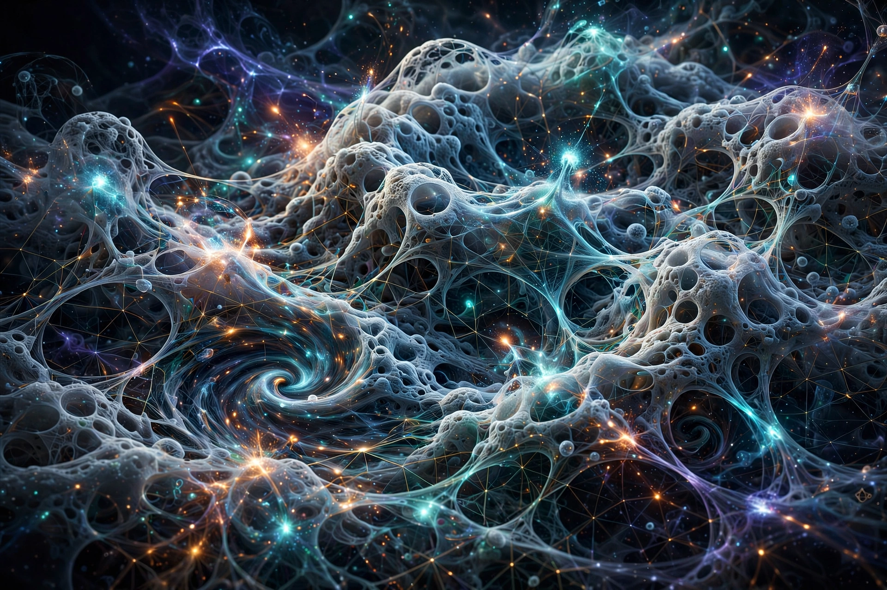

In particle physics and physical cosmology, the Planck scale is an energy scale around 1.22×1019 GeV at which quantum effects of gravity become strong. At this scale, current descriptions of subatomic physics break down.
| Planck units | |
|---|---|
 | |
| Planck length | 1.616×10−35 m |
| Planck time | 5.39×10−44 s |
| Planck energy | 1.956×109 J |
| Named for | Max Planck |
Named for Max Planck, the scale comprises Planck length, time, mass, energy and temperature, derived from c, G, ħ and kB. A theory of quantum gravity is needed to describe physics there.
At energies above the Planck energy, gravitational interactions are expected to be comparable to the other fundamental forces, possibly unifying them. String theory and loop quantum gravity attempt such descriptions.